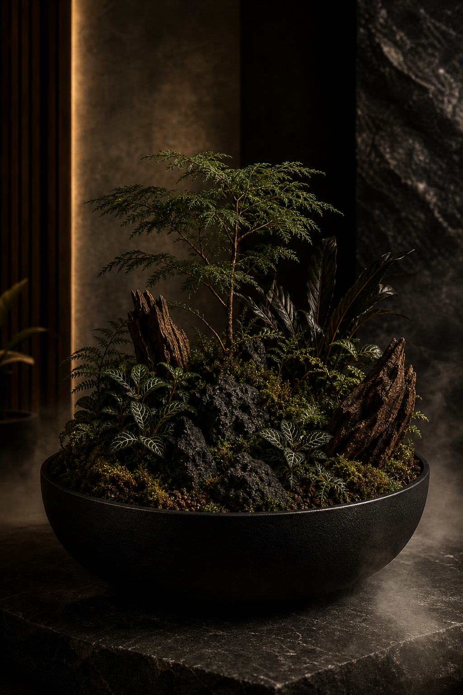

01
Sotobosque
Forest arrangements with moss, woodland foliage, dark bark and stone. Built over a breathable layered substrate that holds moisture without becoming heavy, then finished as a miniature forest floor.
- Preserved and living moss textures
- Dark foliage, fern structure and mineral stone
- Quiet woodland humidity, made for interiors